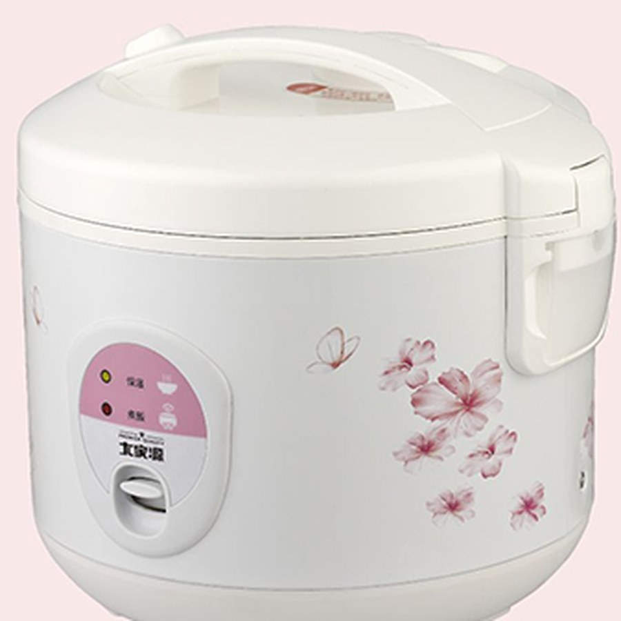
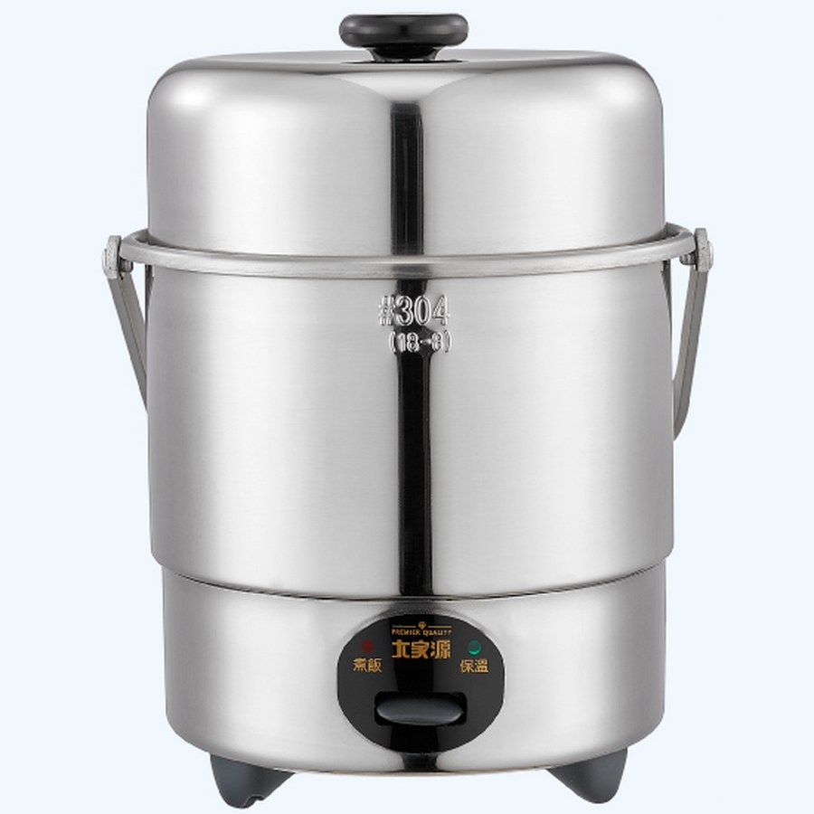
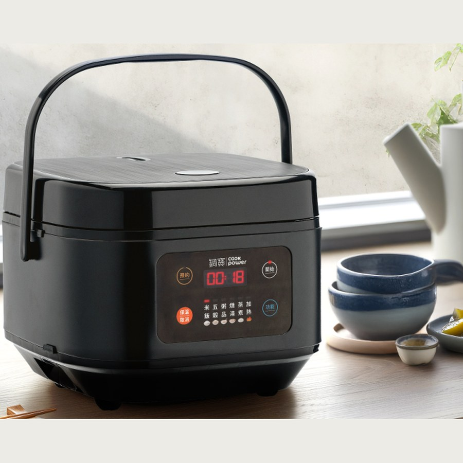
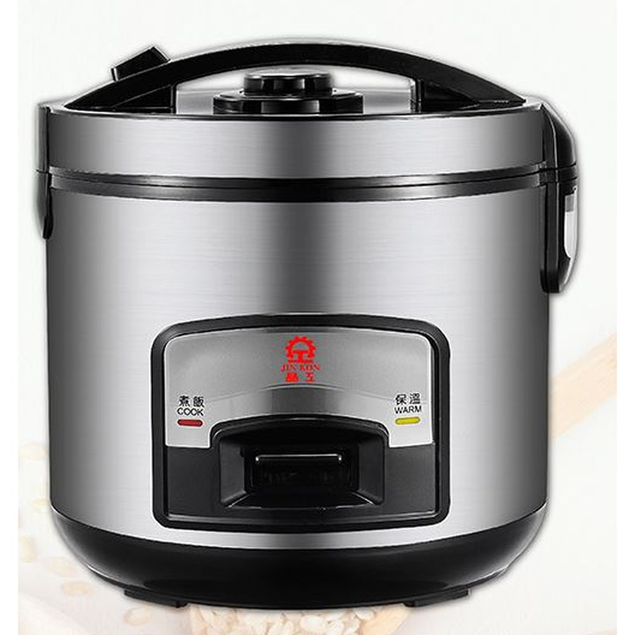

套房電鍋怎麼挑？3–6 人份 4 款比較，先算分路瓦數（2026）
本文怎麼整理。租套房想自己煮飯，得先知道電鍋會不會跟電暖器、吹風機搶同一條分路。以下依 2026 年 11 月 27 日大家源、鍋寶、晶工的品牌官網與官網規格圖，能效另查能源署開放資料、召回查標準檢驗局，整理 4 款官網價 NT$990–1,480 的 3–6 人份電鍋與電子鍋；沒有實機測試，也不比較銷量或米飯口感。官方沒寫的項目一律標「未列」。內容由 AI 協助整理，規格與價格依文中來源核對。
快速結論：先排除不適合的
以下只摘錄可核對的官網規格與限制。編號不是排名；細節請看各款說明。
- NT$990–1,480大家源、晶工官網售價與鍋寶好食光市集網路價（查詢日 2026-11-27）
- 350W–500W4 款的總額定消耗功率
- 3–6 人份依官網品名；容量標示方式各家不同
以 110V、15A 分路、功率因數取 1 估算：500W 電子鍋加 600W 電暖器合計 1,100W、約 10.0A；改搭 1,200W 電暖器合計 1,700W、約 15.5A；改搭 1,500W 吹風機合計 2,000W、約 18.2A，後兩組都超過 15A。同一分路的其他電器也要計入，優先看銘牌額定電流；15A 分路的連續負載上限是 12A。看分路算法。
- 只要煮飯和保溫，想選 4 款中官網售價最低的
- 要不鏽鋼內鍋、附蒸盤、功率最低
- 要預約、要多種料理模式
-
要單鍵操作、看重內鍋厚度
晶工 JK-1661｜500W・1.2 公升（六人份）・單鍵機械式 不適合 要預約、要蒸盤，或買前要確認重量的人（都未列） 別買錯 和 RCO-360 同為 NT$1,480（晶工官網售價／鍋寶好食光市集網路價，查詢日 2026-11-27），但它是單鍵機械式，預約未列
編號為文章編排順序，不是實機評測排名。本次未查庫存，選購當下請以賣場顯示為準。
煮飯時先關高瓦數電器，或改插另一條分路；能不能在房間煮飯，以租約與房東規定為準。
目錄（10 項）
4 款候選怎麼對照
本站含蝦皮分潤連結，透過連結購買我可能獲得分潤，不影響你的價格
| 商品 | 功率 | 容量（品名） | 內鍋 | 重量 | 價格 |
|---|---|---|---|---|---|
|
 |
500W | 2.0L（六人份） | 官網標示「0.9mm 不沾塗層內鍋」 | 2.15kg | NT$990 大家源官網售價（2026-11-27 查詢） |
|
 |
350W（保溫 30W） | 1.6 公升（三人份） | 官網標示 SUS304 不鏽鋼 | 1.21kg | NT$1,090 大家源官網售價（2026-11-27 查詢） |
|
 |
500W | 約 3L ±5%（6 人份） | 官網標示鋁合金＋「易潔不沾陶瓷」 | 約 2.4kg ±5% | NT$1,480 鍋寶好食光市集網路價（2026-11-27 查詢） |
|
 |
500W | 1.2 公升（六人份） | 官網標示 1.5mm 合金厚釜不沾 | 未列 | NT$1,480 晶工官網售價（2026-11-27 查詢） |
查詢日 2026-11-27・編號非排名・點型號看詳細
- 大家源 TCY-3016 NT$990 大家源官網售價（2026-11-27 查詢） 500W · 2.0L（六人份） · 2.15kg 官網標示 0.9mm 不沾塗層內鍋 · 直接加熱式第 3 級
- 大家源 TCY-3205 NT$1,090 大家源官網售價（2026-11-27 查詢） 350W（保溫 30W） · 1.6 公升（三人份） · 1.21kg 官網標示 SUS304 不鏽鋼內鍋 · 附蒸盤
- 鍋寶 RCO-360 NT$1,480 鍋寶好食光市集網路價（2026-11-27 查詢） 500W · 約 3L ±5%（6 人份） · 約 2.4kg ±5% 微電腦 · 12 小時預約 · 能源署登錄第 3 級
- 晶工 JK-1661 NT$1,480 晶工官網售價（2026-11-27 查詢） 500W · 1.2 公升（六人份） · 重量未列 官網標示 1.5mm 合金厚釜不沾內鍋 · 單鍵操作
蝦皮售價依賣場即時變動，以點進去的頁面為準。
容量依各官網原文，標示方式各家不同，公升數不能直接比較；能效等級分直接加熱與間接加熱兩型，不同型不能互比。
逐款比較
大家源
TCY-3016
大家源 TCY-3016（500W，2.0L 六人份）
- 總額定消耗功率
- 500W
- 容量
- 額定容量 2.0L（品名六人份）
- 內鍋
- 官網標示「0.9mm 不沾塗層內鍋」
- 重量
- 2.15kg
- 尺寸
- 寬 25.0 × 深 23.0 × 高 24.0 cm
- 操作
- 機械式按鍵（煮飯、保溫燈）
- 能源效率
- 第 3 級（直接加熱式），熱效率值 84.3%
- 配件
- 內鍋、飯匙、量杯（無蒸盤）
- 預約／保溫功率
- 未列
- 保固
- 一年有限保固（內鍋、不沾塗層屬消耗性零件）
官網規格列總額定消耗功率 500W、額定容量 2.0L，品名六人份，重量 2.15kg，尺寸寬 25.0 × 深 23.0 × 高 24.0 cm。官網寫 0.9mm 不沾塗層內鍋、機械式按鍵、可拆式集水盒、可拆洗內蓋和一體式飯匙插槽；能效標示是直接加熱式第 3 級，熱效率值 84.3%。
限制是配件沒有蒸盤，預約、保溫時間和保溫功率都未列；內鍋與不沾塗層屬消耗性零件，不在一年保固範圍。
規格來源：大家源官方線上購物網商品頁與規格圖
大家源
TCY-3205
大家源 TCY-3205（350W，1.6 公升三人份）
- 總額定消耗電功率
- 350W
- 保溫功率
- 30W
- 容量
- 1.6 公升（品名三人份）
- 材質
- 官網標示內鍋、蒸架、鍋蓋、外殼 SUS304 不鏽鋼
- 重量
- 1.21kg
- 尺寸
- 寬 18.6 × 深 18.0 × 高 24.0 cm
- 操作
- 機械式溫控開關
- 能源效率
- 第 3 級（間接加熱式），熱效率值 80.2%
- 配件
- 蒸盤、計量杯、飯匙、接地線
- 預約
- 未列
- 保固
- 一年有限保固（內鍋、蒸架、握把屬消耗性零件）
官網規格列總額定消耗電功率 350W、保溫功率 30W，容量 1.6 公升，品名三人份，重量 1.21kg，尺寸寬 18.6 × 深 18.0 × 高 24.0 cm。官網寫內鍋、蒸架、鍋蓋、外殼都是 SUS304 不鏽鋼，機械式溫控開關，有提把和加高型鍋蓋；配件有蒸盤、計量杯、飯匙、接地線。能效標示是間接加熱式第 3 級，熱效率值 80.2%。
4 款裡功率最低、也是唯一列出保溫功率的。限制是品名三人份、預約未列；內鍋、蒸架、握把屬消耗性零件，不在保固範圍。
規格來源：大家源官方線上購物網商品頁與規格圖
鍋寶
RCO-360
鍋寶 RCO-360（500W，約 3L ±5%，品名 6 人份）
- 總額定消耗電功率
- 500W
- 容量
- 約 3L ±5%（品名 6 人份）
- 內鍋
- 官網標示鋁合金＋「易潔不沾陶瓷」
- 重量
- 約 2.4kg ±5%
- 尺寸
- 約深 26 × 寬 31 × 高 20 cm ±5%
- 操作
- 微電腦；煮飯、粥品、燉湯、蒸煮；12 小時預約＋自動保溫
- 配件
- 陶瓷內鍋、量杯、飯匙、蒸架（304 不鏽鋼）、電源線、說明書
- 能源效率
- 官網未列；能源署登錄熱效率 84.00%、第 3 級
- 保溫功率
- 未列
- 保固
- 1 年
官網規格列總額定消耗電功率 500W、容量約 3L ±5%，品名 6 人份，重量約 2.4kg ±5%，機體約深 26 × 寬 31 × 高 20 cm ±5%。官網標示內鍋是鋁合金加「易潔不沾陶瓷」，外殼 PP，蒸架 304 不鏽鋼。官網寫煮飯、粥品、燉湯、蒸煮模式，12 小時預約加自動保溫，內蓋可拆，彩色面板；保固 1 年。
4 款裡唯一的微電腦機型，也是唯一在官網列出預約功能的。官網沒寫能效等級，能源署登錄資料是熱效率 84.00%、第 3 級。限制是保溫功率未列，機身寬度也是 4 款最大。
規格來源：鍋寶好食光市集商品頁與商品規格
晶工
JK-1661
晶工 JK-1661（500W，1.2 公升六人份）
- 總額定消耗電功率
- 500W
- 容量
- 商品容量 1.2 公升（品名六人份）
- 內鍋
- 官網標示 1.5mm 合金厚釜不沾內鍋（水量參考線）
- 重量
- 未列
- 尺寸
- 250 × 235 × 250 mm
- 操作
- 單鍵（機械式），自動保溫
- 加熱
- 直熱式螺紋加熱底盤
- 配件
- 量杯、內鍋、飯勺
- 能源效率
- 官網未列；能源署登錄熱效率 80.00%、第 3 級
- 保溫功率／預約
- 未列
- 保固
- 一年（官網常見問題）
官網規格列總額定消耗電功率 500W、商品容量 1.2 公升，品名六人份，尺寸 250 × 235 × 250 mm。內鍋是 1.5mm 合金厚釜不沾內鍋，有水量參考線；單鍵操作、自動保溫，直熱式螺紋加熱底盤，集水盒和內蓋可拆。官網寫微壓精煮技術、3D 立體保溫技術，效果本文沒有驗證。保固依官網常見問題是一年。
官網沒寫能效等級，能源署登錄資料是熱效率 80.00%、第 3 級。限制是重量、保溫功率和預約都未列，官網配件清單也未列蒸盤或蒸架。
規格來源：晶工官網商品頁、規格說明與常見問題
適合誰
- 只要煮飯和保溫，且不需要蒸盤或預約：大家源 TCY-3016（4 款中官網售價最低）。
- 想要不鏽鋼內鍋和蒸盤，接受品名三人份：大家源 TCY-3205（額定功率 350W，4 款中最低）。
- 需要 12 小時預約或煮粥、燉湯等模式：鍋寶 RCO-360（保溫功率未列）。
- 習慣單鍵操作、看重 1.5mm 厚釜內鍋，不需要預約和蒸架：晶工 JK-1661（重量未列）。
不管選哪台，煮飯時先關高瓦數電器，或改插另一條分路。
常見問題
煮飯時可以同時開電暖器或吹風機嗎？
要看同一分路的合計，算法見上方〈先算分路負載〉。功率較低的 350W TCY-3205 加 1,200W 電暖器合計 1,550W、約 14.1A，沒超過 15A，但電暖器本身約 10.9A，已接近連續負載上限 12A；加 1,500W 吹風機合計 1,850W、約 16.8A，超過 15A。以現場斷路器額定為準，建議錯開使用。
為什麼沒有放大同 TRC-6CME？
2026-11-27 查詢時，大同官方購物網連線失敗，無法核對價格與規格，所以這次沒放。
這 4 款有出現在本次查到的召回名單嗎？
2026-11-27 查標準檢驗局商品召回訊息，以「電子鍋」查到 2 筆：2018 年 Panasonic SR-JQ185、SR-JN185 電源線更換，以及 2008 年大家源 TCY-302、SNP-305 召回；以「電鍋」「鍋寶」「晶工」查詢都是 0 筆。本文 4 款都不在名單內。
一年保固包含內鍋嗎？
大家源官網寫一年有限保固，內鍋、蒸架、握把、不沾塗層屬消耗性零件，不在保固範圍。鍋寶 RCO-360 和晶工 JK-1661 官網寫一年保固，消耗性零件的細項未列。
資料與更新紀錄
- 最後核對日
- 核對範圍
- 規格、價格：2026-11-27 查詢大家源官方線上購物網（商品頁與規格圖、常見問題）、鍋寶好食光市集、晶工官網（商品頁、常見問題）。能效：能源署電鍋能源效率分級標示登錄資訊（開放資料）。召回：標準檢驗局商品召回訊息。庫存：本次未查。
- 本次更新
- 在搜尋與分享標題補上「電子鍋」，校正首次發布日期，加上 AI 協助註記與封面情境示意標籤，調整圖片載入。規格與價格沿用原查詢紀錄。
- 這次改了什麼
- 首次發布。
- 資料來源
- 大家源官方線上購物網商品頁、規格圖與保固說明；鍋寶好食光市集商品頁；晶工官網商品頁與常見問題；能源署電鍋能效登錄資料；標準檢驗局商品召回訊息；《用戶用電設備裝置規則》第 38 條；台電電價表。